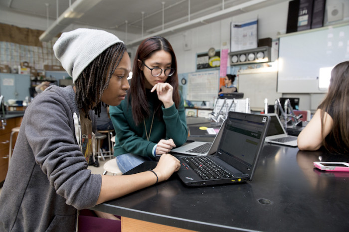
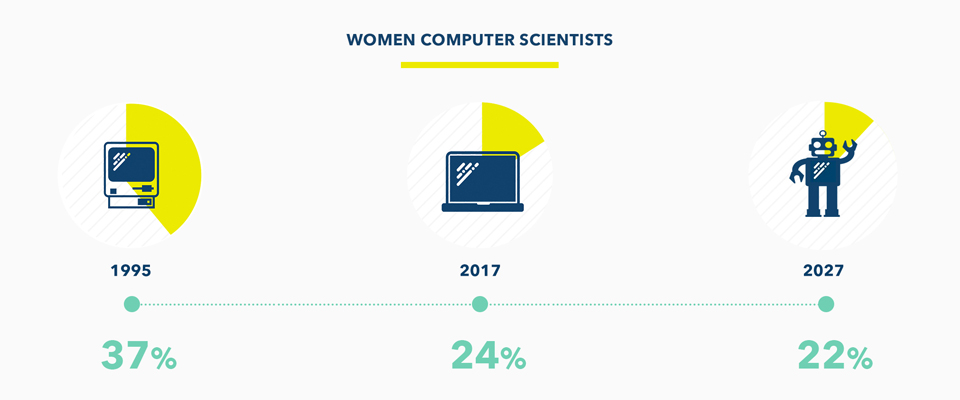
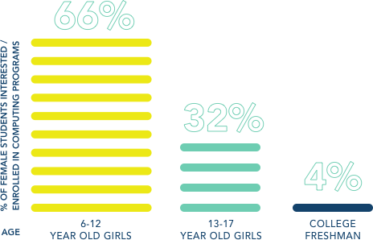

About us:
"Girls Who Code is on a mission to close the gender gap in technology and to change the image of what a programmer looks like"

We need to do something from preventing the gender gap get worst!!!

Over the past years women in technology has decreases over nine percent, if we dont do anything to fix it it will keep decreasing and the gender gap wont be able to improve ever again.
WOMEN CAN DO THE SAME THING AS MEN TOO

As females become older the women in tech has decrease over the age increases.Over time women usinng computer science has dropped in a large amount.